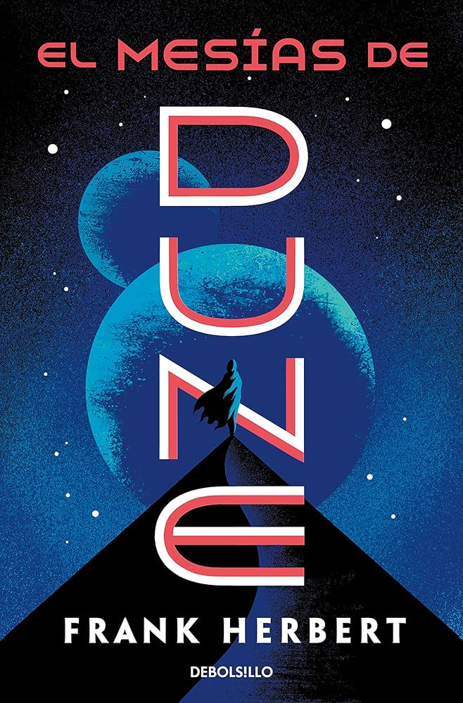
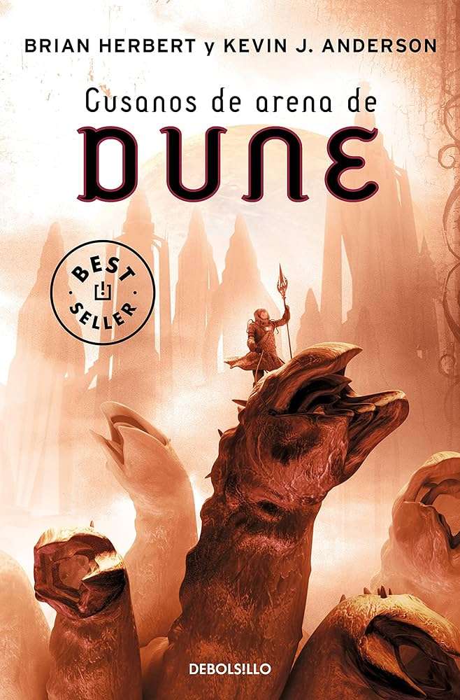

DUNE

El Mesías de DUNE
Hijos de DUNE
Cazadores de DUNE

Gusanos de Arena de DUNE
Dune es una novela épica de ciencia ficción escrita por Frank Herbert en 1965. Su éxito fue rotundo; en el año de su salida, logró el Premio Nébula a la mejor novela en su primera edición y al año siguiente el Premio Hugo a la mejor novela. Publicada en español por la editorial Acervo en 1975, abrió una de las sagas más importantes de la literatura fantástica y de ciencia ficción. En 2007 registró ventas de más 12 millones de ejemplares, convirtiéndola en la novela de ciencia ficción más vendida a la fecha.

Frank Patrick Herbert fue un escritor estadounidense que nació en Tacoma, Washington, el 8 de octubre de 1920 y que falleció el 11 de febrero de 1986. Tras estudiar en la Universidad de Washington tuvo varias profesiones, desde fotógrafo a cámara de televisión o pescador de ostras.
Comenzó a publicar en los años 50, vendiendo artículos y relatos a revistas, hasta que en 1952 publicó su primer relato de ciencia ficción: ¿Está usted buscando algo? Cuatro años más tarde salió a la luz su primera novela, El dragón en el mar, conocida más tarde como Bajo presión.
No sería hasta 1965 cuando finalmente le llegó el éxito a Herbert con la inauguración de la famosa serie Dune, donde presentaba un mundo imaginario con su propia política, ecología y estructura social. La primera obra de la saga, Dune, que pronto se vería continuada por otras novelas como El mesías de Dune o Hijos de Dune, obtuvo los premios Nébula y Hugo, además del Premio Internacional de Fantasía, que compartió con El señor de las moscas de William Golding. La saga ha sido adaptada en varias ocasiones al cine, siendo la película más exitosa la dirigida por Denis Villeneuve.
DUNE parte 1
DUNE parte 2
DUNE
El Mesías de DUNE
Hijos de DUNE
Cazadores de DUNE
Gusanos de Arena de DUNE

DUNE 1992
DUNE II
DUNE 2000

Frank Herbert`s DUNE
Emperor Battle for DUNE